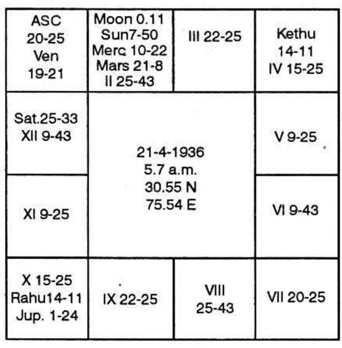

The horoscope is as follows:-

Ketu Dasa balance 6 years 10 months 25 days.
To own any building, one is to note the house 4, 11 and 12. Fourth house denotes permanent possession 12th; indicates issue of a cheque; 11th indicates the gains. It is the sub lord of the 4th cusp, by the nature, denotes the purpose for which the building will be used.
Fourth cusp sub lord is Venus as it is in 15°25′ in Gemini. 12th house is occupied by Venus and Sani. Venus denotes Music, opera, Ciname. Saturn is lord of 11 and 12. No planet is in Saturn star. Saturn is very strong to give 11th and 12th house results.
No planet is in the 4th house. Lord of the sign wherein the 4th cusp falls is Mercury. Moon is in Ketu star Ketu sub. Moon is connected with 5th house as it is lord of sign wherein the 5th cusp falls, and no planet is in Moon's constellation. Fifth house and Venus indicate Cinema. Hence Moon Dasa Saturn Bhukti Venus Anthra will be the time of having one Cinema theatre around the end of January 1974 and beginning of February 1974 when Sun will transit in the constellation of Moon and sign of Saturn.